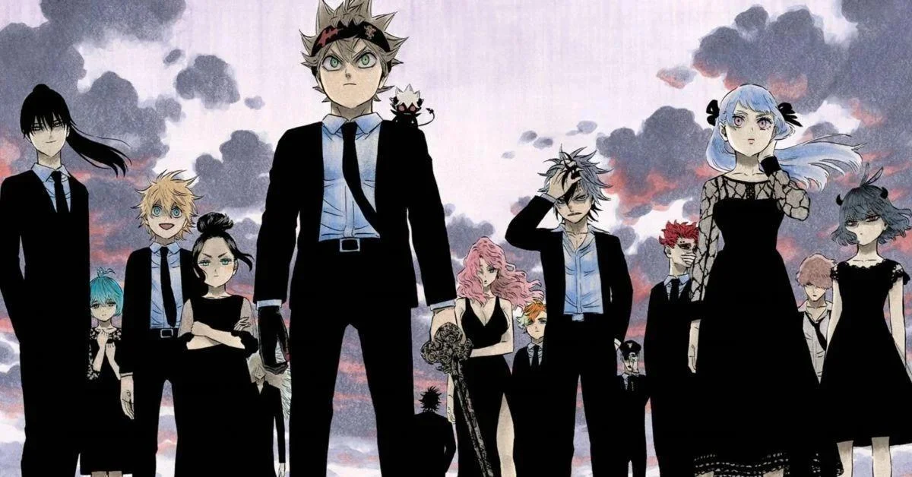
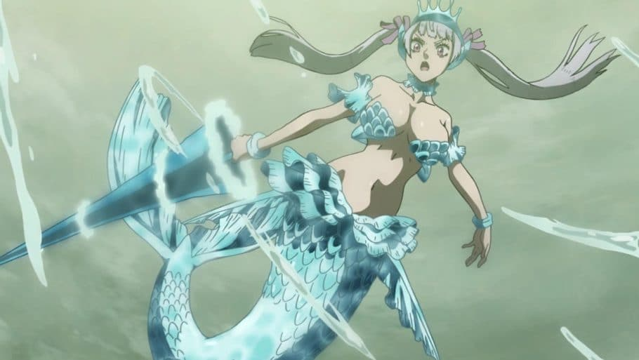
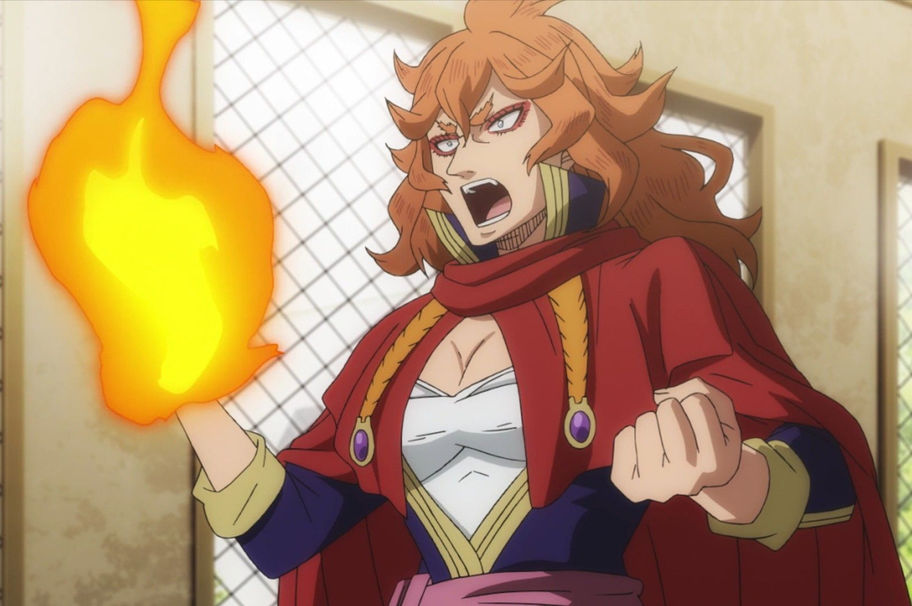

Black Clover, Jornada de Sueperação
20 de Agosto de 2024

"Black Clover" segue Asta e Yuno, dois órfãos em um mundo onde a magia é tudo, que aspiram se tornar o Wizard King, a pessoa mais poderosa do reino. Enquanto Yuno possui talentos mágicos excepcionais, Asta nasceu sem magia, mas compensa com uma força física impressionante e uma determinação feroz. Ambos se tornam cavaleiros mágicos e enfrentam vários desafios e inimigos poderosos. Asta ganha um grimório especial que lhe permite anular a magia dos outros, e a história explora sua jornada para superar obstáculos, proteger o reino e realizar seus sonhos.
Aqui você pode acompanhar a analise dos arcos e personagens.
Divirta-se.
Noelle Silva de uma das mais fracas para uma das mais fortes
20 de Agosto de 2024

Noelle Silva é uma maga talentosa da família nobre Silva, conhecida por seu potencial mágico com água, mas que enfrenta dificuldades de controle e preconceito. Inicialmente insegura e temperamental, ela cresce ao longo da série, superando desafios e provando seu valor como uma guerreira habilidosa.
Leia Mais...
Mereoleona O poder em forma Humana(em breve)
20 de Agosto de 2024

Mereoleona Vermillion é uma poderosa maga da família Vermillion e capitã da Equipe de Cavaleiros Mágicos dos Leões de Fogo. Conhecida por seu incrível talento em magia de fogo e sua personalidade feroz, ela é uma líder implacável e muito respeitada, que desafia seus subordinados a se superarem e lutar com todas as suas forças.